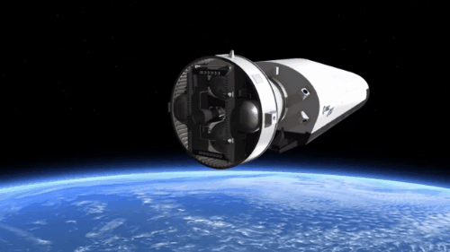
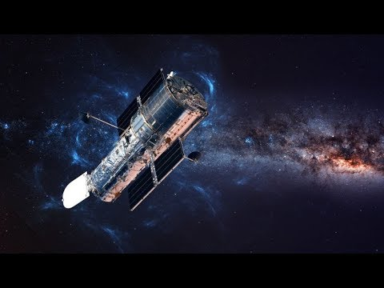

|
Nós somos um grupo formado, para ajudar as pessoas com dificuldades em astronomia. Informamos as pessoas sobre os atros e até mesmo mostrar curiosidades. Adiquirimos técnicas para ajudar na compreenção do espaço e suas posiveis teorias. A SeeSpace é cordenada pelo presidente Luan, com sua empresa de tecnologias. O verdadeiro interesse desta empressa é ajudar as pessoas a terem um conhecimento maior sobre o assunto. Mas o que é AstronomiA? |
Astronomia
|  |
Astronomia é uma ciência natural que estuda corpos celestes (como estrelas, planetas, cometas, nebulosas, aglomerados de estrelas, galáxias) e fenômenos que se originam fora da atmosfera da Terra (como a radiação cósmica de fundo em micro-ondas). Preocupada com a evolução, a física, a química e o movimento de objetos celestes, bem como a formação e o desenvolvimento do universo. A astronomia é uma das mais antigas ciências. Culturas pré-históricas deixaram registrados vários artefatos astronômicos, como Stonehenge, os montes de Newgrange e os menires. As primeiras civilizações, como os babilônios, gregos, chineses, indianos, iranianos e maias realizaram observações metódicas do céu noturno. No entanto, a invenção do telescópio permitiu o desenvolvimento da astronomia moderna. Historicamente, a astronomia incluiu disciplinas tão diversas como astrometria, navegação astronômica, astronomia observacional e a elaboração de calendários. Durante o período medieval, seu estudo era obrigatório e estava incluído no Quadrivium que, junto com o Trivium, compunha a metodologia de ensino das sete Artes liberais. |
Durante o século XX, o campo da astronomia profissional dividiu-se em dois ramos: a astronomia observacional e a astronomia teórica. A primeira está focada na aquisição de dados a partir da observação de objetos celestes, que são então analisados utilizando os princípios básicos da física. Já a segunda é orientada para o desenvolvimento de modelos analíticos que descrevem objetos e fenômenos astronômicos. Os dois campos se complementam, com a astronomia teórica procurando explicar os resultados observacionais, bem com as observações sendo usadas para confirmar (ou não) os resultados teóricos.
Os astrônomos amadores têm contribuído para muitas e importantes descobertas astronômicas. A astronomia é uma das poucas ciências onde os amadores podem desempenhar um papel ativo, especialmente na descoberta e observação de fenômenos transitórios.
A Astronomia não deve ser confundida com a astrologia, sistema de crença que afirma que os assuntos humanos estão correlacionados com as posições dos objetos celestes. Embora os dois campos compartilhem uma origem comum, atualmente eles estão totalmente distintos.
|  |
|
Já sabemos o que é a SeeSpace. Agora só aproveitar o conteúdo. Bons estudos.
|
|


|
Autor: Luan Francisco Savarese |